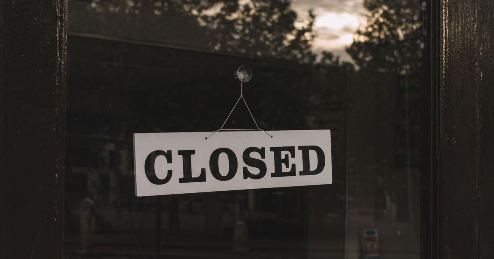

Entrevista · 25 de septiembre de 2026
Estacionalidad: meses difíciles para el comercio antes del verano
José Alberto Suárez anticipó un período complejo para comercios y servicios tras una temporada invernal que arrancó tarde, y describió el problema como estructural.

Entre las causas mencionó la retracción del consumo, el aumento de costos de las pymes, la desaceleración de la construcción, el peso de los alquileres comerciales, la presión impositiva y los costos logísticos. Sostuvo que el pueblo no está preparado para un turismo masivo y volvió sobre la necesidad de actualizar la Carta Orgánica municipal, con un ente con autonomía presupuestaria, política y técnica.
Fuente: La Angostura Digital, 25/09/2026
Compartí esta nota: https://camaravla.org.ar/noticias/2026-09-estacionalidad-entrevista